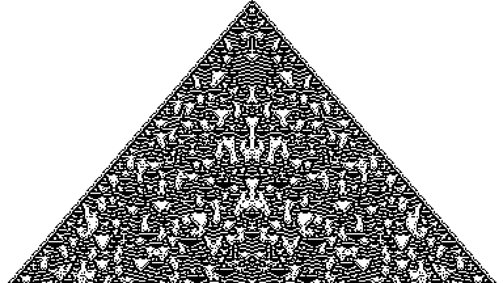

What is it?
Your eyes are currently focusing on this text while blood circulates across your body, your lungs inhale and exhale, and your brain processes a thousand thoughts in parallel. How does this and everything else going on with you happen simultaneously without requiring any centralized top-down control?Well, the obvious answer is these different parts of you operate in a decentralized manner. However, they do not function independently in isolation but rather self-organize themselves by a network of chemical and electrical signaling pathways.
Now if you throw away the biology from the previous sentence and replace the word operate with computation, you get the gist of what I mean by computational web.
A network of self-organizing nodes that perform computation.
The idea of a network of information processing (or computational) nodes is so ubiquitous that we can see it everywhere around us and that too at different levels of hierarchy. We can find it from a collection of protiens to our brain to populations to social media to artificial neural networks. You might have already heard of things like a hivemind, collective intelligence, computation graphs, etc, etc. All of them are also talking about a network of information processing nodes. Now if this phenomenon is so omnipresent and already discussed then why do we even talk about it? That is where the word Web comes in.
The Web perspective
Three things have improved significantly over the last few decades -- Internet connectivity - Increased adoption, 5G
- Sensing capabilities - Think of all those fancy sensors on your phone and IoT devices
- Machine Learning - Deep neural networks
Self-organization as a precursor to Decentralization
 Cellular automata image where the color of each cell is generated only based on its neighbors. This seemingly aesthetic image is an outcome of a self-organizing process between the cells. Image credit - Softology blog Self-organization is an important and underexplored aspect of engineering the computational web. Recall that our goal is to design a system that does not require top-down control. The obvious question here is then how do we organize the whole system in a meaningful and task-oriented way? This is where self-organization holds promise. Effective communication and message passing is the key to having several distributed computing devices coordinate with each other without any top-down control. Typically, in a self-organizing system, we have a system of agents where each agent acts independently to a certain degree but their actions lead to emergent phenomenons at a higher level of abstraction. For example - in the image above, we can see how simple rules can generate an interesting image. Plenty of such examples where local interaction leading to emergent outcomes are available in biology and society. While it is exciting and important to study these naturally occurring examples of self-organization, the goal for the computational web is how can we use these principles to engineer the computational web. For example - how to distribute machine learning tasks among different computational agents such that the emergent outcome is an ML model. Federated learning and Split learning already do that but assume each client has data and computation power to perform such a task. This engineering aspect is what I am most excited about and will be writing more detailed blogs in the upcoming days.The trust issues on the web
Data privacy is probably the biggest impeding factor here if we are going to perform computation over data sensed from and for individuals. Accessing data sitting behind silos is a risky problem due to the harms associated with its usage and unwarranted access. Therefore, designing systems with data privacy baked in is going to be necessary. Combining Privacy Enhancing Technology (PETS) with distributed machine learning is a classic way to go about it. For instance, several recent works have proposed Federated Learning that uses secure aggregation with differential privacy to enable collaborative learning on private data. However, trust just does not stop at privacy. Other trust aspects such as how to prevent malicious actions from users and service providers are an equally important problem too.Outsourcing and Crowdsourcing
Let us take a pause and ask why are we even interested in designing this computation web? Sure it has interesting technologies like decentralization, self-organizing, etc. But what problems can it solve? I think it is ultimately the outsourcing and crowdsourcing of computation and data that we want to perform. In most practical cases, no single entity has every resource - data, computation, storage, etc. And by computational web, I mean systems and algorithms that allow different individuals/institutions to collaborate to share these resources. Conventionally crowdsourcing is thought of as a top-down system where a centralized entity runs a platform for the participants to contribute with resources. However, crowdsourcing could be decentralized too. For instance - The BitTorrent protocol allows you to crowdsource files through several seeders. Similarly, outsourcing is usually considered without any trust issues. For instance, if I am using a voice assistant (pick your favorite one), I trust the service provider with my data. I also assume they apply their computation over my data correctly. Due to the same reason, I can not use these applications where it is too dangerous to make that assumption. Therefore reducing some of these trust barriers is going to be an important problem to maximize the usage of outsourcing and crowdsourcing.Any connections with Web3?
As the Web3 pundits like to say - Web1 is read, Web2 is write, and Web3 is own. A lot of important progress has been made by researchers in cryptography that enables people to assign tokens, validate them and reach a consensus on their value using distributed computing. I think Web3 is going to be more about compute instead of own. The computational web is mostly focusing on the how of computation - how to make it intelligent, decentralized, private, etc. Web3 is focusing on the why - designing tokens of value that motivate and incentivize people to contribute. Therefore, these systems will coalesce together nicely to make data more fluid.Fractal nature of computational Web
In case you are confused if computational web refers to the general phenomenon of computational networked nodes or the specific abstraction layer of smart devices with data. I guess the answer is both. Network science folks already study several such networks such as the spread of information, infection, etc. What makes these interconnected webs an interesting place for science and engineering is their hierarchical and modular nature. For example - every neuron in the brain is doing some computation by applying a filter on electric voltage (Roger Penrose might not like this view but let's focus on the example). Among this big set of neurons, a subset of interacting neurons can be viewed as applying computation collectively. Similarly, a group of such neuron modules (various cortexes) can be viewed as performing computation together. Therefore, there is a self-repeating pattern here at multiple scales. In the context of the computational Web that could mean a group of smart devices performing computation collaboratively to result in an emergent outcome. This aspect is an important one because it allows you to argue about the functionality of a system at different layers of the hierarchy and usually each layer in the hierarchy is working for the "greater good" of the layer above in the hierarchy. The other less elegant alternative would be a hierarchy where every layer performs different tasks making it difficult to manage and align the goals of the integrated system.Conclusion
We are pretty early in this area. What are your thoughts? Does it even make sense? Let me know. If there is some particular aspect interesting to you and you would like to collaborate then definitely reach out. I will be writing about some of these things in a lot more detail in the upcoming blogs so stay tuned.